L’objet de la semaine
Lampe suspendue tunisienne ouvragée
Réalisé par des bénévoles. Claire Natanek l'a faite pour pendre au-dessus de ta tête : lève les yeux et regarde-la comme elle veut être vue.
Explorer en 3DLes sites archéologiques du monde disparaissent plus vite qu’on ne peut les protéger. Le changement climatique apporte inondations, tempêtes et chaleur qui accélèrent l’érosion. Sans action urgente, des pans de l’histoire du monde pourraient disparaître. À chaque scan, Tanit XR crée une archive permanente. Même si le site physique est perdu, la mémoire numérique survit, pour les écoles, les musées et les générations futures.
Tanit XR a été fondée par Ines Said, qui a grandi en Tunisie entourée de ruines. Aujourd’hui, nous sommes une communauté mondiale de bénévoles en Tunisie, aux États-Unis, en Europe et en Afrique, qui se retrouvent chaque semaine pour scanner, optimiser, enseigner et apprendre l’histoire, accompagner des étudiants, et publier et présenter des recherches. Nous construisons une archive libre et ouverte du patrimoine tunisien, qui, nous l’espérons, servira de modèle à d’autres régions sous-représentées.
Réalisé par des bénévoles. Claire Natanek l'a faite pour pendre au-dessus de ta tête : lève les yeux et regarde-la comme elle veut être vue.
Explorer en 3D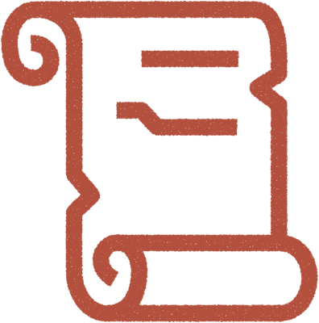
Les bénévoles capturent statues, mosaïques et ruines avec leur téléphone. Chaque numérisation devient une archive ouverte et permanente.
Explorer les archives →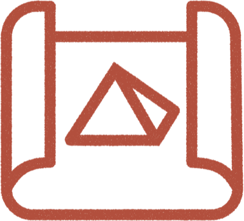
À distance, des bénévoles transforment les numérisations brutes en modèles prêts pour le jeu, en leçons de réalité augmentée et en notre musée virtuel.
Visiter le musée virtuel →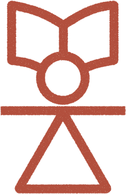
Appels communautaires hebdomadaires, leçons d’histoire sur les sites numérisés, et l’atelier Des splats au téléphone.
Rejoindre la communauté →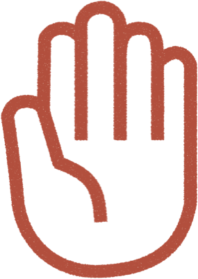
Préparation aux entretiens, revues de portfolio et mentorat pour étudiants et jeunes bénévoles, sur quatre continents.
Devenez bénévole →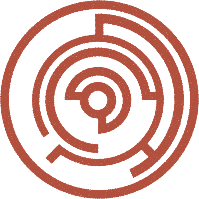
Articles académiques, présentations en conférence, conférences publiques, hackathons et ateliers. Nous publions et partageons nos recherches et nos enseignements avec un public mondial.
Presse et reconnaissance →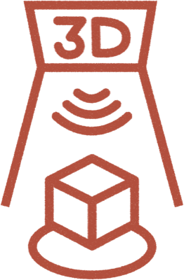
Nous construisons un cadre mondial pour un patrimoine numérique collaboratif. Tout a commencé en Tunisie, sous le signe de Tanit, déesse de la protection. Nous étendons aujourd’hui le modèle au monde entier, avec les Unique Mappers au Nigeria et d’autres partenaires.
TanitXR et les Unique Mappers →Une soirée consacrée à l’histoire tunisienne, à la culture qui voyage entre les pays et à l’usage de la technologie pour une cause qui en vaut la peine. Dr Caroline Nickerson reviendra sur son séjour en Tunisie, et vous ferez connaissance avec les bénévoles qui font Tanit XR. Pour les Tunisiens comme pour les amis de la Tunisie, et pour toute personne travaillant à la croisée de la technologie, de l’art et de l’impact social. Les places sont limitées et l’entrée se fait sur liste d’invités, merci donc de vous inscrire avant le vendredi 16 octobre.
Chaque objet que nos bénévoles ont numérisé en Tunisie, un par un, en 3D, dans votre navigateur. Faites-le tourner du doigt. Nura, notre guide, flotte à côté de vous et vous raconte ce que vous regardez. Gardez ceux que vous aimez, partagez-les, collectionnez des badges, entrez dans la galerie de chaque créateur, ou mettez un casque.
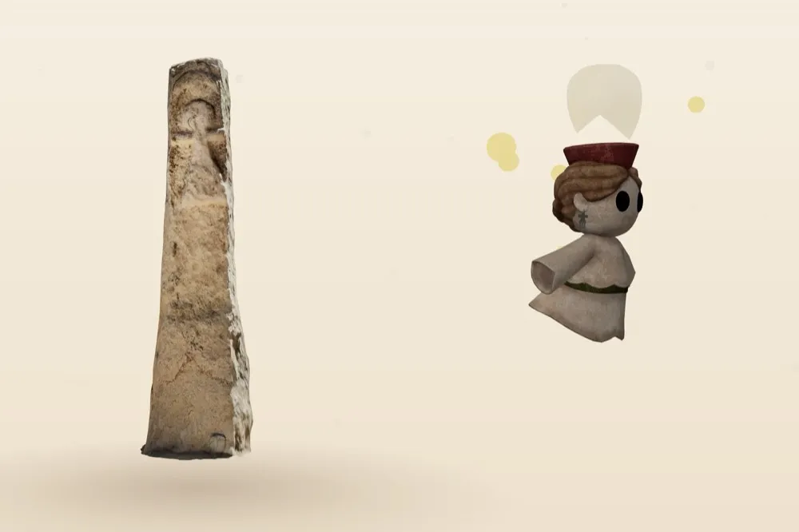
Faites glisser pour tourner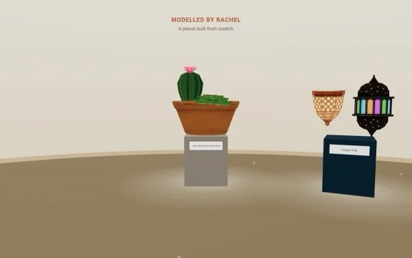
Bourses, résidences et appels pour artistes et créateurs XR toutes les une à deux semaines, uniquement ce à quoi nous postulerions nous-mêmes, plus de temps en temps, des nouvelles de Tanit XR. Gratuit, désabonnement à tout moment.
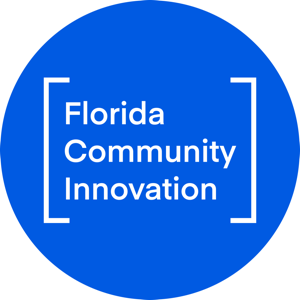
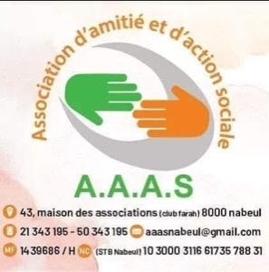
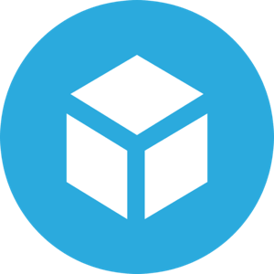
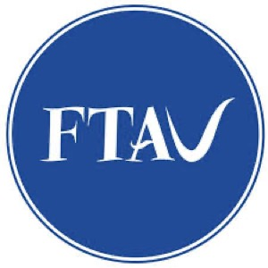
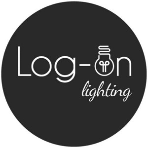